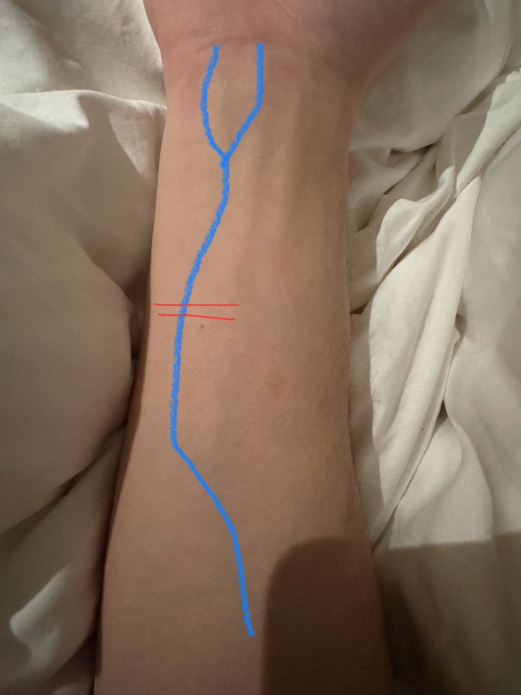

片段3:我一个朋友，因为某些原因，用得力那款黄色的裁纸刀，在左胳膊的这个位置连着划了两刀，第一刀划破真皮，能看到青色的血管，第二刀划断血管（图中蓝色为血管，红色为那两刀），然后就这样拿着一个蓝色的垫子，穿着校服，但是没拿走校服的蓝色外套（梦里她的那身校服是蓝白配色的，里面的衣服是白色主色调，蓝色配色，外套基本都是蓝色），然后就这么离开家了，然后画面一转是一个没有声音的片段，像是电影，画面里有三个人，两个是她的好朋友，还有一个是家长，然后他们三个人从画面的左边向右边跑，一边跑一边在哭，但是没有声音，只有像老电影那样带着颗粒感的画面，再一转，是一个警察出现在一个公园，跟他们三对话，警察高高瘦瘦的，冷冷淡淡地开口说人找到了，就在那边，然后他指了一个方向，是一片临近黑色栏杆的草地，草地里是我那个朋友，她整个人朝左侧躺着，蜷缩着，然后右手捂着左胳膊上的伤口，周围的草都被染红了。她的朋友和家长跑过去之后，两个女生捂着嘴。她听到动静之后慢慢睁开了眼，然后坐起来，静静看了眼左胳膊，然后说了一句，没死啊。戛然而止
